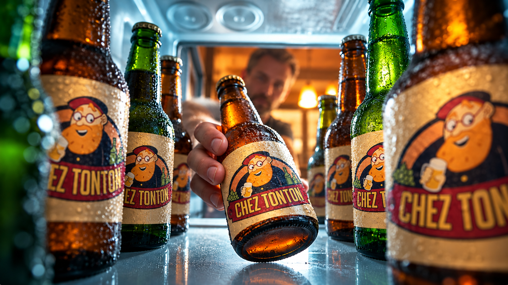
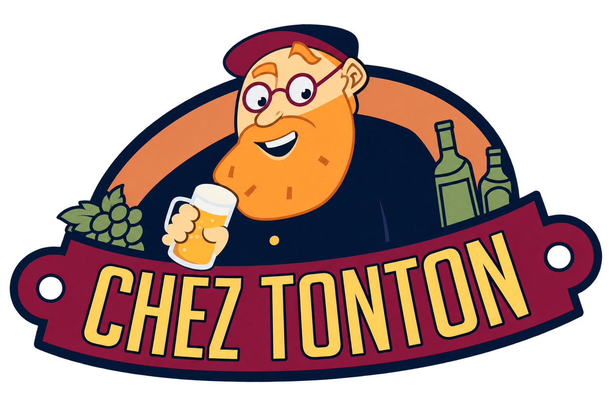
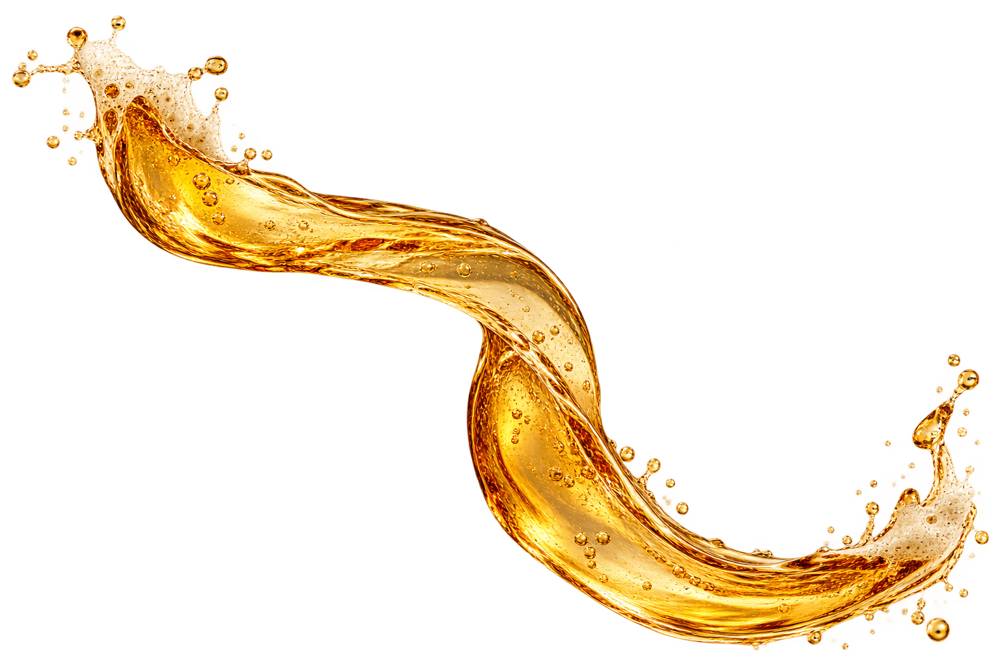
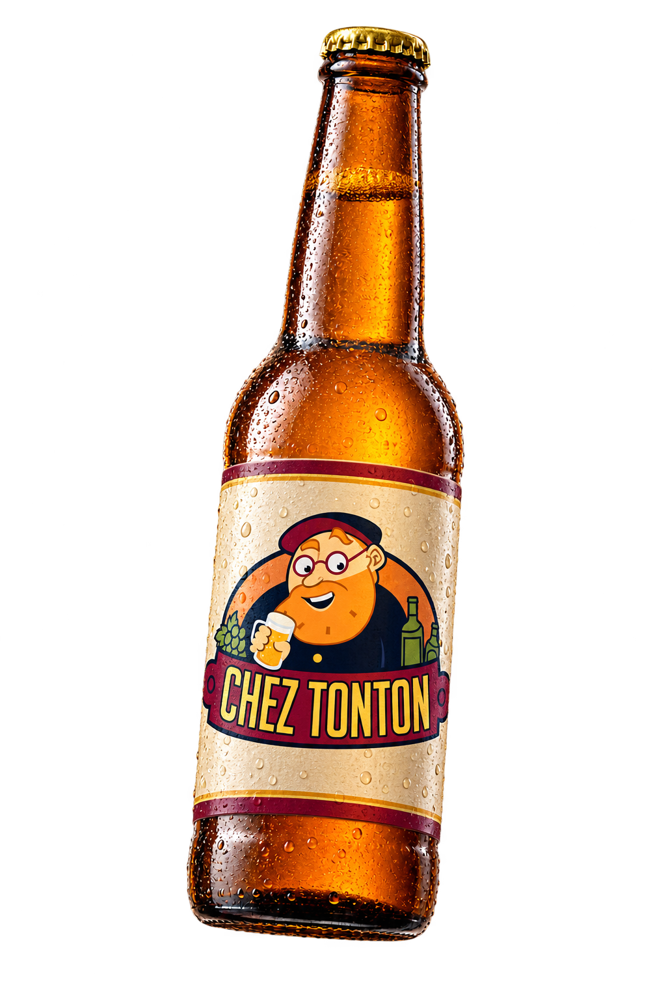
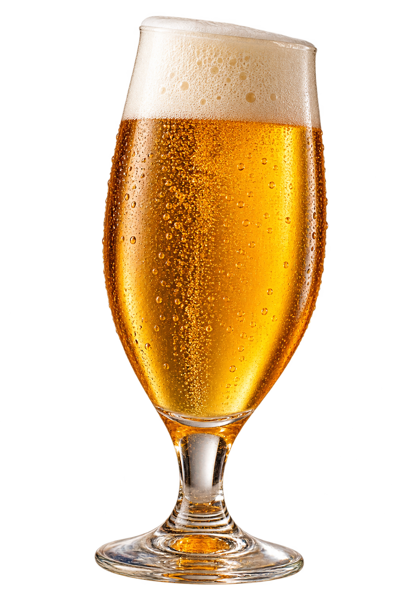
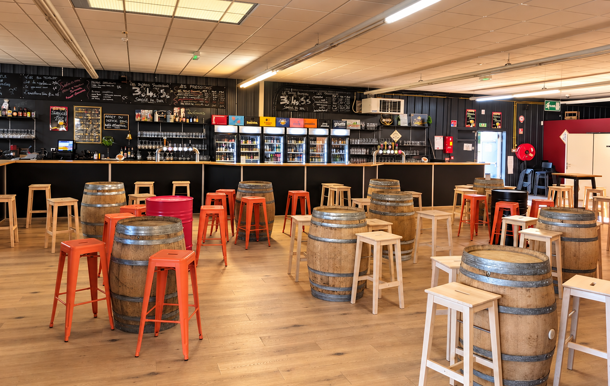
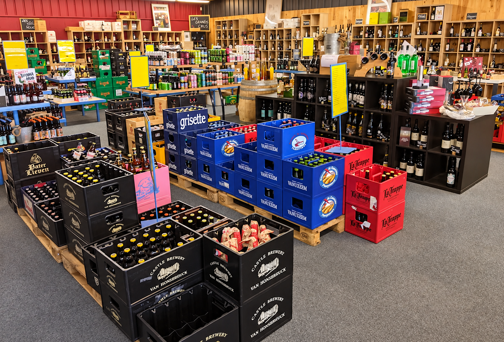
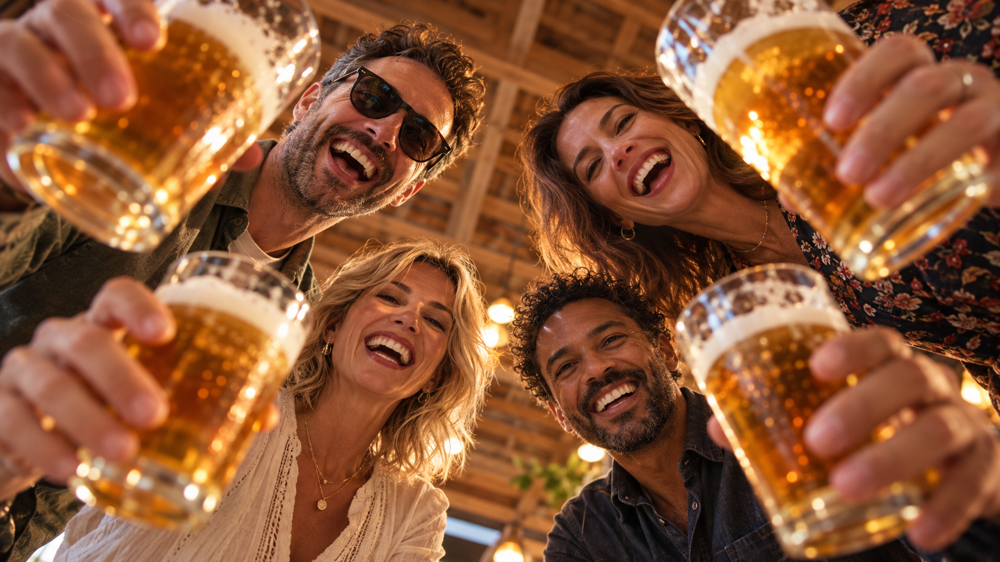

Bières, vins et découvertes. Sur place ou à emporter, bienvenue chez TonTon.
Un lieu, deux façons de découvrir.
Installez-vous au comptoir et découvrez les bières et vins proposés sur place.
Bières, vins et spiritueux à emporter, avec les conseils de l’équipe.

Un verre, une discussion, des retrouvailles.
Parlez-nous de votre projet.
Contactez l’équipe pour les possibilités et disponibilités.
Découvrez la sélection en boutique.
À découvrir en cave.
Retrouvez l’actualité et les prochains rendez-vous sur nos réseaux.
20 rue du Vélodrome, 44160 Pontchâteau02 40 66 84 19
Étude de direction, non site officiel. Logo reconstruit à partir de la photo fournie. Bar et cave : photos fournies retouchées. Autres images : campagne conceptuelle, pas les clients ni l’équipe du lieu. Ce prototype utilise des images fixes et des transitions, pas une simulation de liquide.